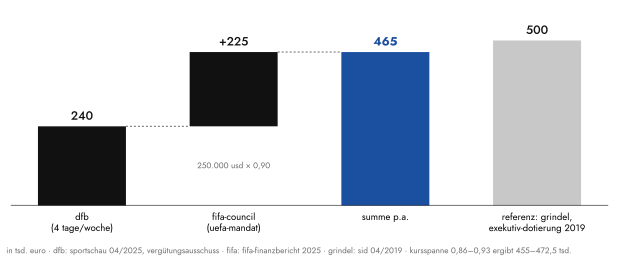
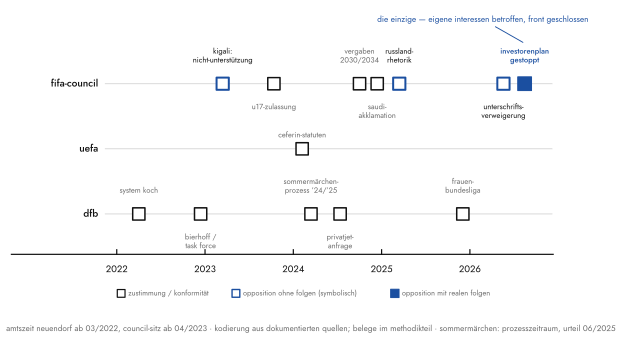
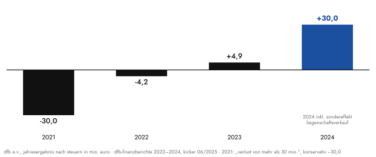
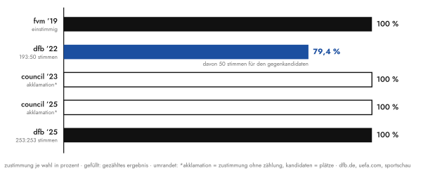

Bernd Neuendorf ist der bestbezahlte Ehrenamtliche des deutschen Sports: rund eine halbe Million Euro im Jahr, zur Hälfte aus Zürich. Was er dafür liefert, lässt sich messen — in dreizehn Episoden auf drei Ebenen. Herausgekommen ist ein Muster, kein Skandal. Was von beidem am Ende teurer ist, entscheiden Sie.
1die rechnung
Fangen wir mit der langweiligsten Zahl an, denn sie ist die belastbarste. Der Deutsche Fußball-Bund zahlt seinem Präsidenten rund 240.000 Euro im Jahr.1 Das Amt ist satzungsrechtlich ein Ehrenamt; die Vergütung legt ein unabhängiger Ausschuss fest, nach einem Zeitbezugswert in Wochentagen. Bei Amtsantritt 2022 setzte der Ausschuss den Höchstwert an: fünf Tage. Im April 2023, drei Wochen nach Neuendorfs Wahl in den FIFA-Council, korrigierte er auf vier — weil mit dem Züricher Mandat „eine geringere Arbeitszeit des Präsidenten für den DFB einhergeht".2 Man kann diese Fußnote der Verbandsbürokratie für Kleinkram halten. Ich halte sie für die ehrlichste Zahl des ganzen Systems: Der DFB dokumentiert selbst, dass sein Präsident ihm seit 2023 ein Fünftel weniger gehört. Zum Vergleich lohnt der Blick auf den Vizepräsidenten: Hans-Joachim Watzke machte beim selben Ausschuss anderthalb Tage geltend, den Mindestwert — der Mann führte parallel einen Champions-League-Finalisten und wusste offenbar genauer, was ein Nebenamt ist.
Das fehlende Fünftel wird andernorts vergütet, und zwar besser. Für den Sitz im FIFA-Council überweist Zürich 250.000 US-Dollar jährlich; der FIFA-Finanzbericht 2025 weist die Zahlung erneut aus, „zusätzlich zu seinen DFB-Einkünften".3 Je nach Kurs ergibt das 455.000 bis 472.500 Euro im Jahr — die halbe Million des Titels, konservativ gerechnet. Konservativ deshalb, weil Nebenleistungen nicht öffentlich sind. Als die Süddeutsche 2024 fragte, wie oft der Präsident im Privatjet fliegt und wer das bezahlt, bestätigte der Verband „wenige Ausnahmefälle" und verweigerte alles Weitere.4 Es bleibt also bei: mindestens.

Ist das viel? Die Frage ist falsch gestellt, und der Beleg dafür heißt Reinhard Grindel. Als der 2019 über eine geschenkte Uhr stürzte, rechnete der SID nach: Grindels Sitze in den Exekutivgremien von UEFA und FIFA waren mit 500.000 Euro dotiert — „für acht reguläre Sitzungen im Jahr".5 Die halbe Million ist also keine Neuendorf-Anomalie. Sie ist der Systempreis der Position, unabhängig davon, wer auf ihr sitzt. Womit die eigentliche Frage erst beginnt: Bezahlt wird hier offenkundig nicht eine Leistung, sondern ein Platz. Was aber liefert der Platz?
2die lieferung
Das Schöne an Gremien ist: Sie protokollieren. Neuendorf sitzt seit April 2023 im FIFA-Council — gewählt nicht vom DFB, sondern vom UEFA-Kongress, als Vertreter Europas. Die 250.000 Dollar entlohnen formal ein europäisches Mandat. Man kann daher nachzählen, was Europa dafür bekommt. Ich habe es getan: acht Vorgänge auf FIFA- und UEFA-Ebene, bei denen eine Positionierung dokumentiert ist, kodiert nach zwei simplen Fragen. Hat er opponiert? Und was hätte eine Opposition gekostet?

Die Chronologie beginnt mit dem einzigen Moment, für den Neuendorf international bekannt wurde. Kigali, März 2023: Der DFB verweigert Gianni Infantino die Unterstützung zur Wiederwahl, nach wochenlangem Druck von Fanbündnissen und Menschenrechtsorganisationen.6 Klingt nach Widerstand, kostete aber nichts — Infantino stand ohne Gegenkandidaten da und wurde per Akklamation bestätigt. Drei Wochen später ließ sich Neuendorf selbst in den Council heben. Per Akklamation, versteht sich.
Dann wird es interessant. Herbst 2023, der Council lässt russische U17-Teams wieder zu — zwölf europäische Verbände, darunter England, verweigern daraufhin offen Spiele gegen Russland. Neuendorf trug den Beschluss im Council mit.7 [BN prüfen — Ich-Vorschlag: Ich gebe zu, ich hatte vor der Kodierung mit einem simpleren Muster gerechnet: Zustimmung, wo Zürich zahlt, Widerstand, wo die Kameras stehen — und Widerstand vor allem dann, wenn andere Verbände Deckung geben. Die Daten haben mich korrigiert.] Denn hier gab es die Deckung ja: eine Zwölf-Länder-Front, öffentlich, angeführt vom englischen Verband. Er hätte sich nur einreihen müssen. Er blieb im Gremium — und beim Gremium.
Dezember 2024 folgte die Reinform. Die WM 2034 ging per virtuellem Kongress an Saudi-Arabien, im Paket mit der Vergabe 2030, en bloc, Abstimmung per Applaus. Der DFB applaudierte mit; nur Norwegens Verbandschefin Klaveness verweigerte sich.8 Neuendorfs Begründung ist deshalb bemerkenswert, weil sie so ehrlich ist: „Warum sollten wir eine Opposition spielen, die völlig zum Scheitern verurteilt wäre?" Das ist exakt die Sorte Symbolpolitik, die er in Kigali betrieben hatte — nur dass sie dort applausfähig war und hier etwas gekostet hätte. Acht Tage vor dem Zuschlag hatte die FIFA übrigens einen Milliardendeal mit DAZN verkündet, bei dem kurz zuvor der saudische Staatsfonds mit derselben Milliarde eingestiegen war.3 Eine zeitliche Abfolge, kein Kausalbeweis. Aber man darf sie aufschreiben.
Zwischen diesen Polen liegt die eigentliche Technik, und sie verdient einen eigenen Absatz: die Entkopplung von Rhetorik und Stimme. Die Vergaben für 2030 und 2034 passierten den Council im Oktober 2024 einstimmig — begleitet von Neuendorf-Interviews über „Fragen zur Nachhaltigkeit" und Menschenrechten, die man sich stelle. Im März 2025 sprach er sich öffentlich gegen eine generelle Rückkehr russischer Teams aus — eine Position, über die nirgends abzustimmen war. Das Fanbündnis „Unsere Kurve" hat die Buchführung übernommen und trocken festgehalten, der DFB habe im Council bislang „jede Entscheidung mitgetragen". Kritik findet vor Mikrofonen statt, Zustimmung in Sitzungen; beides ist wahr, beides ist dokumentiert, und beides zusammen ist das Muster. Auch die jüngste Schlagzeile gehört in diese Spalte: Im Juli 2026 verweigerte der DFB die Unterschrift unter das Unterstützungsschreiben für Infantinos Wiederwahl — medial ein Paukenschlag, praktisch die Kigali-Figur in Neuauflage. Der kicker notierte im selben Text, ein Votum gegen Infantino sei „nicht zu erwarten" und das Verhältnis seit dem gemeinsamen Auftritt beim 125-Jahr-Festakt des DFB ohnehin „normalisiert".9
Und dann, Juli 2026, das Gegenbeispiel — das einzige. Infantino wollte im Eilverfahren einen Investorenplan durch den Kongress bringen, „FIFA Forward Enterprise", Beteiligung privater Geldgeber an künftigen FIFA-Erlösen. Neuendorf nannte das öffentlich ein „fatales Zeichen" und drohte mit Fernbleiben vom Kongress.9 Harte, wirksame Opposition; Infantino zog den Plan zurück. Nur: Man sehe sich die Bedingungen an. Der Vorstoß traf die materiellen Interessen sämtlicher Verbände, der Council war übergangen worden, die UEFA-Front stand — Neuendorfs Wortmeldung kam einen Tag vor dem gemeinsamen UEFA-Beschluss, und sein eigenes Fazit lobte hinterher das „geschlossene Auftreten aller UEFA-Verbände". Opposition findet statt, wenn die eigene Kasse betroffen ist und die Kosten geteilt sind. Das ist keine Charakterschwäche, das ist Preistheorie.
3der heimtest
Ein Muster, das nur auf einer Ebene auftritt, ist eine Anekdote. Also der Test im Inland, fünf Fälle. Nach dem WM-Debakel 2022 wurde die Trennung von Oliver Bierhoff nötig — sie kam „einvernehmlich", und die Nachfolgefrage wanderte in eine eigens gebildete Task Force, aus deren Mitte dann Rudi Völler gekürt wurde. Der Konflikt wurde nicht entschieden, er wurde kollektiviert.10 Im Sommermärchen-Prozess, dem größten Justizverfahren der Verbandsgeschichte, erschien an 34 Verhandlungstagen kein einziger amtierender Funktionär; die Vorsitzende Richterin nannte die Zusammenarbeit mit dem DFB „katastrophal", rügte eine „versuchte Einflussnahme" per Verbandsschreiben an die Generalstaatsanwaltschaft und fragte öffentlich, ob der Verband „die Justiz eigentlich ernst" nehme.11 Das Urteil selbst fiel für den DFB doppelt aus: Die Kammer sah im Kern eine Steuerhinterziehung des Verbands von rund 2,7 Millionen Euro und verhängte 110.000 Euro Geldbuße — während der DFB parallel seinen früheren Präsidenten Zwanziger auf 24 Millionen Euro Schadensersatz verklagt. Aufarbeitung, delegiert an Justiz und Zivilkammer; die Amtierenden blieben dem Saal fern. Die Privatjet-Anfrage hatten wir schon: Bestätigung des Minimums, Verweigerung der Details — Informationskontrolle, strukturgleich mit der Kigali-Begründung („keine oder unzureichende Informationen"), nur diesmal in der Rolle des Auskunftspflichtigen.
Der aufschlussreichste Fall ist der einzige offen ausgetragene Machtkampf der Amtszeit, und er ging verloren. Als die vierzehn Erstligistinnen-Klubs im Dezember 2025 einen eigenen Ligaverband gründeten — ohne DFB-Beteiligung —, reagierte der Verband offiziell „verwundert". Das gemeinsame Joint Venture scheiterte; im Mai 2026 stand der Grundlagenvertrag: Die Frauen-Bundesliga geht ab Juli 2027 an den Ligaverband, der DFB zahlt über sieben Jahre mehr als 20 Millionen Euro mit. Neuendorf nannte das Ergebnis einen „tragfähigen Kompromiss".12 Rückzug plus Scheck, rhetorisch kodiert als Einigung — die Vokabel ist Verbandsprosa, die Bilanz ist eindeutig.
Bleibt Rainer Koch, der Strippenzieher des alten DFB, der Neuendorfs Kandidatur mit auf den Weg gebracht hatte. Vor der Wahl 2022 lehnte Neuendorf jede Festlegung ab — er könne sich „nicht einfach auf die Seite der Koch-Gegner schlagen". Das Problem löste sich dann selbst: Koch verlor durch eine eigene taktische Panne die Präsidiumswahl, bot Rückzug an, ging zurück in den Richterberuf.13 Das „System Koch" endete — ohne dass der neue Präsident dafür einen Finger gerührt oder riskiert hätte. Fünf von fünf Fällen, dasselbe Muster. In dreizehn kodierten Episoden auf drei Ebenen findet sich kein einziger dokumentierter Konflikt, den Neuendorf offen ausgetragen und gewonnen hätte.
4die herkunft des musters
Woher kommt so ein Betriebssystem? Nicht vom Platz. Neuendorfs aktive Karriere endete als Jugend-Linksaußen des FC Grenzwacht Hürtgen mit einer Knieverletzung — es bleibt die einzige dokumentierte Position, auf der er je Gegner hatte. Danach: Geschichte, Politik, Soziologie in Bonn und Oxford, Reuters-Volontariat, Parlamentskorrespondent, stellvertretender Chefredakteur. Und dann, 2003, der Seitenwechsel, der alles Weitere erklärt: Sprecher des SPD-Parteivorstands unter Gerhard Schröder, mitten in der Agenda-Zeit. Er selbst später darüber: „Ich bin schon vom Kurs Gerd Schröders überzeugt gewesen. Wir waren damals die Truppe, die gesagt hat: Wir finden das richtig."14
Die Truppe hielt ein Jahr. Als Schröder den Parteivorsitz an Müntefering abgab, wurde der Sprecher ausgetauscht — der erste Patronatssturz. Neuendorf ging nach Nordrhein-Westfalen, wurde Sprecher, dann Landesgeschäftsführer der NRW-SPD, das „organisatorische und intellektuelle Rückgrat" des Landesverbands, schließlich beamteter Staatssekretär im Familienministerium, zuständig unter anderem für Sport. Bis 2017 Hannelore Kraft abgewählt wurde — der zweite Patronatssturz, und diesmal ohne Anschlussverwendung: sechzehn Monate, die in jeder offiziellen Vita als „Übergangsphase" firmieren. Dann, Ende 2018, die Nominierung zum Präsidenten des Fußball-Verbands Mittelrhein. Einstimmig, ohne Gegenkandidaten, ohne dass der Kandidat je ein Verbandsamt bekleidet hätte.
Man muss daraus keine Küchenpsychologie machen; die Aktenlage genügt. Wer zweimal erlebt hat, dass die eigene Position exakt so lange trägt, wie der Patron im Amt ist, hat eine rationale Lektion gelernt: Nicht die Nähe zur Macht sichert das Amt, sondern die Nähe zur Mehrheit. Als die Amateurverbände 2021 einen Präsidenten suchten, der nach drei vorzeitig gescheiterten Vorgängern vor allem eines sollte — nicht anecken —, fanden sie einen Bewerber, dessen gesamte Laufbahn Anschlussfähigkeit trainiert hatte. Die Süddeutsche nannte ihn ein „neues Gesicht fürs alte System", Übermedien den „Olaf Scholz des Fußballs".15 Beides war als Kritik gemeint. Als Stellenprofil gelesen, war es eine Punktlandung: 193 zu 50 Stimmen gegen den Kandidaten der Ligen.
Die SPD taucht in dieser Geschichte übrigens nicht als These auf, sondern als Milieu. Zwanzig Jahre Partei- und Ministerialapparat sind eine Schule, und was sie lehrt, ist überall dasselbe: Beschlusslagen gelten, Mehrheiten werden vor der Sitzung organisiert, und wer im Gremium überstimmt wird, trägt mit. Neuendorf hat diese Grammatik nicht erfunden, er hat sie nur konsequenter internalisiert als die meisten — und in einen Verband getragen, dessen Delegiertenwesen ihr strukturell ohnehin gleicht. Dass sein wichtigster Förderer auf dem Weg ins Amt, der Bayer Rainer Koch, laut öffentlich zugänglichen Angaben ebenfalls SPD-Mitglied ist, sei nur als Randnotiz vermerkt. Es braucht keine Verschwörung, wo eine gemeinsame Sozialisation genügt.
5die gegenrechnung
Nun die Gegenseite, und sie ist besser, als der bisherige Text vermuten lässt. Neuendorf übernahm 2022 einen Verband mit einem strukturellen Defizit von rund 20 Millionen Euro und Vizepräsidenten, die einander über Anwälte grüßten. 2024 schloss der DFB e.V. mit rund 30 Millionen Euro Überschuss ab; die freie Rücklage wuchs erstmals seit 2014 wieder, auf 54,7 Millionen.16 Die Konsolidierung — etwa 15 Millionen Euro, in einem Verband, in dem jede Kürzung durch einen Ausschuss muss — hat Neuendorf einmal mit einem Satz kommentiert, der ehrlicher ist als jede Bilanzpressekonferenz: „Das war ein Brett."

[BN prüfen — Ich-Vorschlag: Der Einwand, an dem ich beim Schreiben am längsten hängen geblieben bin, steht in dieser Grafik. Wenn Konfliktvermeidung ein Charakterzug ist, der Verbände ruiniert — warum ist dieser Verband dann in besserem Zustand als bei der Übernahme?] Die redliche Antwort: Beides kann gleichzeitig wahr sein. Die Mitgliederzahl überschritt 2025 erstmals acht Millionen; die Heim-EM lief organisatorisch tadellos; die Frauen-EM 2029 wurde im Dezember gegen zwei Mitbewerber nach Deutschland geholt. Zugleich sind die Attributionsgrenzen dokumentiert: Der Mitgliederrekord verdankt sich auch einer Zählreform im Kinderfußball, während die Zahl der Vereine erstmals unter 24.000 fiel; der Rekordüberschuss einem Einmaleffekt; und die sportliche Kernaufgabe steht bei drei frühen WM-Ausscheiden in Folge, zuletzt im Sechzehntelfinale gegen Paraguay, mit anschließender Vertragsauflösung des Bundestrainers.17 Ein Präsident, der fürs Nicht-Anecken gewählt wurde, hat geliefert, wofür er gewählt wurde: Ruhe und geordnete Bücher. Nur stand das nicht allein in der Stellenausschreibung. Die Sportschau zog nach der ersten Amtszeit eine „durchwachsene" Bilanz und lieferte im WM-Sommer die Überschrift, die als Verhaltensbeschreibung präziser ist als jede Kodierungstabelle: „Der Boss ist dabei, aber nicht mittendrin."17
Und dann ist da noch die Passage, in der die Gegenrechnung in die Rechnung zurückkippt. Die Heim-EM lief über ein Joint Venture, an dem die UEFA 95 und der DFB 5 Prozent hielt. Bund, Länder und Städte trugen nach ZDF- und Spiegel-Recherchen rund 650 Millionen Euro; die UEFA zahlte auf ihre Vermarktungserlöse keine Steuern und verbuchte am Ende rund 2,5 Milliarden Euro Einnahmen und 1,276 Milliarden Turniergewinn. Deutschlands Preisgeld: 15,75 Millionen.18 Der Kommentar des gastgebenden Verbandspräsidenten dazu, im Wortlaut: „Dass die UEFA damit Geld verdient, ist auch in Ordnung." Man beachte das Wort „auch". Es arbeitet härter als der Rest des Satzes.
6akklamation als betriebssystem
In № 01 dieser Reihe steht eine Vermessung des Weltfußballs auf der Mafia-Skala nach Gambetta und Paoli.19 Die UEFA schnitt dort mit 46 von 100 Punkten als einziges Gremium unterhalb der 50 ab — ausdrücklich deshalb, weil sie das einzige Gremium ist, in dem dokumentierter Dissens je Wirkung hatte: Boban, Gill, Klaveness. Genau hier wird die Personalie zur Systemfrage. Neuendorf operiert in der einen Konföderation, deren vergleichsweise gute Note auf der Möglichkeit wirksamen Widerspruchs beruht — und die Kodierung oben zeigt, dass er diese Möglichkeit in keinem dokumentierten Fall genutzt hat. Er bewohnt den Spielraum, er benutzt ihn nicht.
Wie wenig, zeigt der Fall Ceferin. Anfang 2024 ließ der UEFA-Präsident seine Statuten so ändern, dass seine erste Amtszeit nicht mehr zählt — das Züricher Manöver, kopiert nach Nyon, gegen die Amtszeitbegrenzung, die 2017 auch auf Betreiben des DFB eingeführt worden war. Der DFB sagte seine Zustimmung vorab öffentlich zu, „auch auf Grundlage der guten Zusammenarbeit". Beim Kongress stimmte ein einziger Verband dagegen: England.20 Ceferin verzichtete anschließend auf die Kandidatur, mit dem bemerkenswerten Satz, er habe „das wahre Gesicht mancher Leute sehen" wollen. Ein Jahr später, in Belgrad, warb die DFB-Spitze offen für seine vierte Amtszeit; Neuendorfs Beitrag: „Die Verbände arbeiten immer gut, wenn es an der Spitze Stabilität gibt." Der Verband stimmte also gegen die eigene Reform von 2017, für ein Manöver nach Infantino-Vorlage — aus Gremientreue gegenüber dem Mann, der sie einst mit dem DFB beschlossen hatte. Konformität schlägt hier nachweislich die eigene Geschichte.

Zur Architektur gehört noch eine Personalie, die das Bild vervollständigt. Während der Präsident sein Amt auf ein Amateur-Mandat gründet, vereint sein Erster Vizepräsident drei Funktionen: Watzke führt den Aufsichtsrat der DFL, sitzt seit 2025 als Zweiter Vizepräsident im UEFA-Exekutivkomitee und im DFB-Präsidium.20 Die Profiseite ist damit in Verbandsspitze und Europa-Gremium personell identisch vertreten — mit eigener Machtbasis und eigener Agenda, siehe Belgrad. Ein Präsident, der Konflikte mied, und ein Vize, der sie nicht braucht, weil er die Strukturen gleich selbst besetzt: Auch das erklärt, warum diese Amtszeit so geräuscharm blieb. Es gab schlicht wenig, worüber an der Spitze zu streiten gewesen wäre — und dort, wo es das gab, bei den Frauen, verlor der Verband gegen die Klubs.
№ 01 führt „Ehrungen per Akklamation" als Omertà-Indikator des Systems. Man muss den Befund nur eine Ebene tiefer hängen: Von Neuendorfs fünf Wahlen seit 2019 kannte genau eine einen Gegenkandidaten — die erste beim DFB. Alles danach lief einstimmig oder per Applaus, zuletzt mit 253 von 253 Stimmen. Und die Council-Vergütung, die halbe Hälfte der halben Million, ist dieselbe Mechanik, die № 01 als Patronage vermisst: Ausschüttungen, die Loyalität nicht kaufen müssen, weil sie sie strukturieren. Niemand hat Neuendorf bestochen. Das System bezahlt schlicht die Position — und die Position verhält sich, wie Positionen sich verhalten, die per Akklamation vergeben werden.
7für was?
Bleibt die Titelfrage, und sie hat zwei Adressaten. Der DFB zahlt 240.000 Euro für vier Tage Verbandsführung pro Woche — und bekommt dafür, nüchtern bilanziert, sanierte Finanzen, einen befriedeten Apparat, eine gelungene Heim-EM, eine geholte Frauen-EM, dazu einen verlorenen Machtkampf um die Frauen-Bundesliga, einen Verband, der vor Gericht durch Abwesenheit auffiel, und die dritte verpatzte Männer-WM in Folge. Man kann das eine ordentliche Bilanz nennen; die Sportschau nannte sie „durchwachsen". Europa zahlt, über Zürich, 250.000 Dollar für die Vertretung im mächtigsten Gremium des Weltfußballs — und bekommt dafür einen Vertreter, dessen dokumentierte Gremienbilanz null Gegenstimmen aufweist, dessen Widerspruch verlässlich dann auftritt, wenn er nichts kostet, und genau einmal, als es die eigene Kasse betraf.
[BN prüfen — Ich-Vorschlag: Beim letzten Gegenlesen habe ich gemerkt, dass mich die Zahl selbst gar nicht mehr beschäftigt. Eine halbe Million ist im Weltfußball Portokasse; die FIFA verdient sie in einer Viertelstunde Klub-WM. Hängen geblieben ist etwas anderes: dass sich in vier Jahren und dreizehn Episoden kein einziger Moment findet, in dem dieser Preis irgendein Risiko enthalten hätte.]
Vielleicht ist das die eigentliche Antwort. Bezahlt wird nicht Leistung und auch nicht Loyalität — bezahlt wird Berechenbarkeit. Ein Mann, der zweimal erlebt hat, was mit Positionen passiert, die an Personen hängen, liefert dem System die einzige Ware, die es wirklich nachfragt: die Garantie, dass von ihm keine Überraschung ausgeht. Grindel bekam für dieselbe Position dasselbe Geld; der Preis kennt seine Träger nicht. Eine halbe Million, für was? Für vier Tage Verband, ein paar Sitzungen Council und die verlässliche Abwesenheit von Widerspruch. Ob das teuer ist, hängt davon ab, was einem Widerspruch wert wäre. Das System hat seine Antwort längst gegeben — einstimmig, versteht sich, und per Akklamation.
methodik & quellen
Die Vergütungsrechnung addiert die vom Vergütungsausschuss kommunizierte DFB-Vergütung (rund 240.000 Euro, Sportschau 04/2025) und die im FIFA-Finanzbericht 2025 ausgewiesene Council-Vergütung (250.000 US-Dollar), umgerechnet mit der Kursspanne 0,86–0,93 EUR/USD; daraus 455.000–472.500 Euro p.a. Formulierung „mindestens", da Nebenleistungen nicht offengelegt sind. Eine kolportierte Vorgeschichte (265.000 Euro vor 2022) blieb als Einzelquelle unberücksichtigt. — Die Kodierung erfasst alle im Zeitraum 2022–2026 öffentlich dokumentierten Vorgänge, in denen eine Positionierung Neuendorfs bzw. des DFB belegt ist; „Opposition" heißt öffentlich dokumentierte Nicht-Zustimmung, „Folgen einer Opposition" unterscheidet folgenlose (Ergebnis stand fest) von realen Konstellationen (Stimme oder Front hätte Wirkung entfalten können). Die Kodierung ist binär und damit gröber als die Wirklichkeit; die Grenzfälle E1 und E7 sind im Text als symbolisch ausgewiesen. Feststellungen des LG Frankfurt betreffen Vorgänge vor Neuendorfs Amtszeit; für alle genannten Personen gilt, wo Verfahren erwähnt sind, die Unschuldsvermutung. Der stärkste Einwand gegen die Deutung steht in Kapitel 5. Rohdaten, Quellen-URLs und die vollständige Kodierungstabelle liegen als Arbeitsmappe beim Autor; der stärkste Einspruch wird veröffentlicht — auch wenn er sitzt.